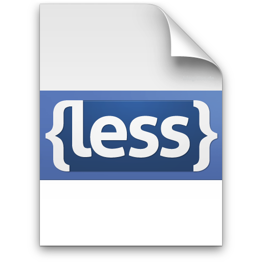
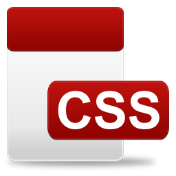

LESS
Make stylesheets fun again
yuanyan
Synopsis
- LESS是什么
- LESS解决什么问题
- LESS工作原理
- LESS详细语法
- LESS实战
Less.js
动态样式语言，CSS的扩展(超集)
注重实效的前端攻城湿居家旅行必备良药
- Official: http://lesscss.org
- Github: https://github.com/cloudhead/less.js
已有案例
- Twitter: http://twitter.github.com/bootstrap/
About CSS糟糕的编程体验
/* this is for the fuckin' ie6 only */
#docViewerContainer .error-doc #docViewerScreen,
#docViewerContainer .timeout-doc #docViewerScreen,
#docViewerContainer .loading-doc #docViewerScreen,
#docViewerContainer .error-doc #docViewerScrollBar,
#docViewerContainer .timeout-doc #docViewerScrollBar,
#docViewerContainer .loading-doc #docViewerScrollBar,
#docViewerViewport.error-doc #docViewerScreen,
#docViewerViewport.loading-doc #docViewerScreen,
#docViewerViewport.timeout-doc #docViewerScreen,
#docViewerViewport.error-doc #docViewerScrollBar,
#docViewerViewport.loading-doc #docViewerScrollBar,
#docViewerViewport.timeout-doc #docViewerScrollBar {
visibility: hidden;
}
DRY(Don't Repeat Yourself)
Then CSS3css3 is big
#docViewerTips {
width: 180px; height: 20px;
-webkit-border-radius: 3px; /* Safari and Chrome */
-o-border-radius: 3px; /* Opera */
-ms-border-radius: 3px; /* IE */
-moz-border-radius: 3px; /* Firefox */
border-radius: 3px; /* W3C */
-webkit-box-shadow:3px 2px 5px #808080; /* Safari and Chrome */
-moz-box-shadow:3px 2px 5px #808080; /* Firefox */
box-shadow:3px 2px 5px #808080; /* W3C */
}
 + = 
.less + less engine = .css

Features
Variables
@nice-blue: #5B83AD;
@light-blue: @nice-blue + #111;
#header { color: @light-blue; }
Outputs:
#header { color: #6c94be; }
Operations
@base: 5%;
@filler: @base * 2;
@other: @base + @filler;
color: #888 / 4;
background-color: @base-color + #111;
height: 100% / 2 + @filler;
Nested rules
与html节点结构相对应，写的更少，最重要的是可读性更高，更容易维护
//code less
ul#main-nav {
list-style-type: none;
li {
color: blue;
a { color: black;}
}
}
Mixins
兼容性一直是前端的痛,Less但书写跨浏览样式更容易
// mixins
.opacity(@val:1){
opacity: @val;
filter: "alpha(opacity=@{val}*100)";
}
.opacity(0.5);
Functions
@base-color: hsl(30, 40%, 60%)
#header {
color: lightness(@base-color, 10%);
}
#footer {
color: saturation(@base-color, -10%);
};
Namespaces
#bundle {
.button {
display: block;
border: 1px solid black;
background-color: grey;
:hover { background-color: white }
}
.tab { ... }
.citation { ... }
}
#header a {
color: orange;
#bundle > .button;
}
Scope
@var: red;
#page {
@var: white;
#header {
color: @var; // white
}
}
Comments
/* One hell of a comment */
@var: red;
// Get in line!
@var: white;
Importing
@import "library";
@import "typo.css";